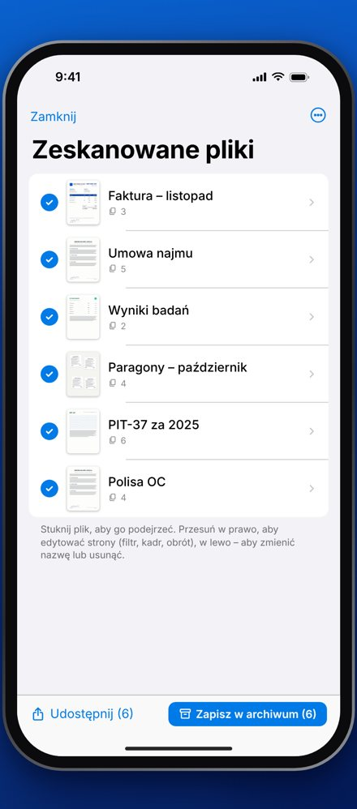
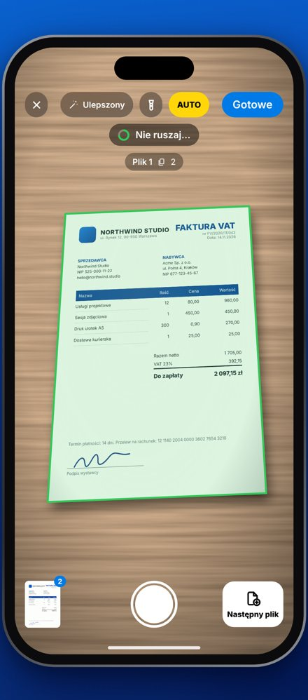
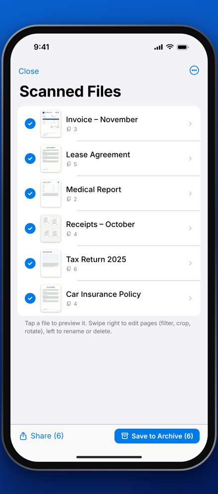
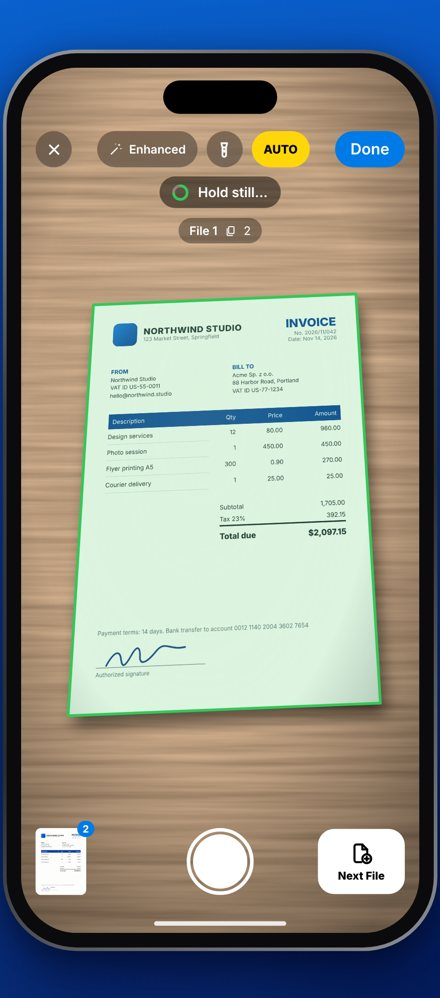
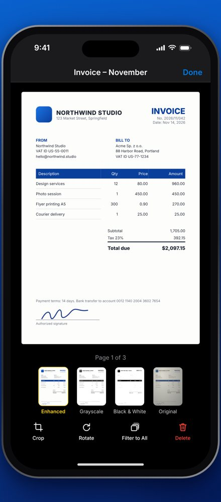

Cały stos papierów. Osobne PDF-y.
ScanSprint trzyma aparat włączony przez całą sesję. Kładziesz kartkę, aplikacja sama robi zdjęcie, a przycisk „Następny plik” zaczyna nowy dokument bez wychodzenia z aparatu.


Skanowanie bez dotykania
Wykrywa kartkę, czeka, aż obraz będzie nieruchomy i ostry, i robi zdjęcie. Ty tylko przekładasz strony.
Zero duplikatów
Rozpoznaje, że pod aparatem leży wciąż ta sama kartka, i nie skanuje jej drugi raz.
Osobny PDF dla każdego dokumentu
„Następny plik” zapisuje bieżący PDF i od razu zaczyna kolejny. Każdy dokument może mieć wiele stron.
Filtry, kadr i obrót
Popraw każdą stronę po skanowaniu. Edycja korzysta z oryginalnego zdjęcia, więc nie traci jakości.
Wysyłanie wielu plików naraz
Zaznacz kilka PDF-ów i udostępnij je natywnym menu iOS jako osobne pliki, bez pakowania do ZIP.
Postępy zawsze zapisane
Każda strona trafia na dysk od razu. Po zamknięciu aplikacji sesja wraca dokładnie tam, gdzie była.
W 100% offline, bez konta. ScanSprint nie ma serwera, logowania, reklam ani analityki. Zdjęcia i PDF-y zostają na Twoim urządzeniu. Polityka prywatności
A whole stack of paper. Separate PDFs.
ScanSprint keeps the camera running for the whole session. Lay a page down and it is captured automatically. Next File starts a new document without leaving the camera.



Hands-free scanning
Finds the page, waits until the image is steady and sharp, then takes the shot. You just turn the pages.
No duplicate pages
Recognizes when the same sheet is still under the camera and never scans it twice.
One PDF per document
Next File saves the current PDF and starts the next one right away. Each document can have many pages.
Filters, crop and rotate
Fix any page after scanning. Edits use the original photo, so quality never degrades.
Share many files at once
Select several PDFs and share them from the iOS share sheet as separate files, never as a ZIP.
Progress always saved
Every page is written to storage immediately. If the app closes, your session comes back exactly where it was.
100% offline, no account. ScanSprint has no server, no sign-in, no ads and no analytics. Your photos and PDFs stay on your device. Privacy Policy